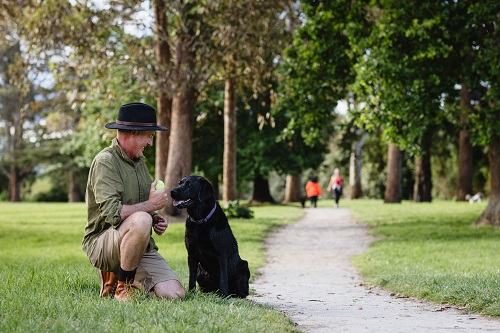

Pakowhai Regional Park
Pakowhai Regional Park is a dedicated dog walking park with agility areas, grassy fields, and water. Care must be taken with dogs off-leash as many dogs and owners frequent the park. There are both leashed and off-leash areas. NOTE: this link does not work, and just for display purposes.